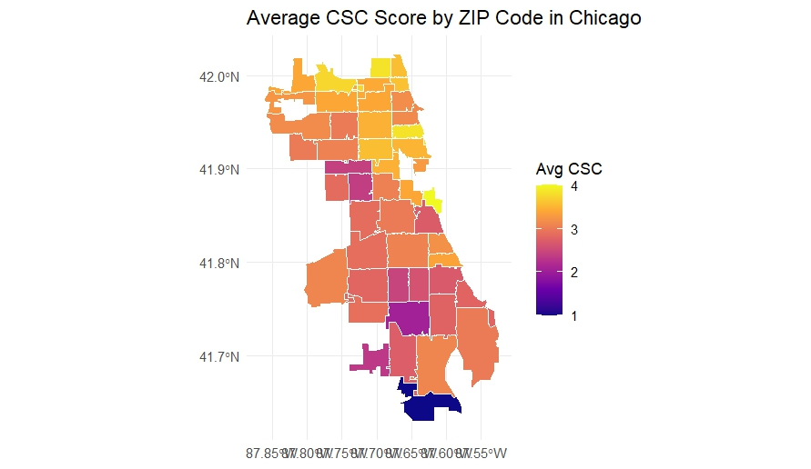
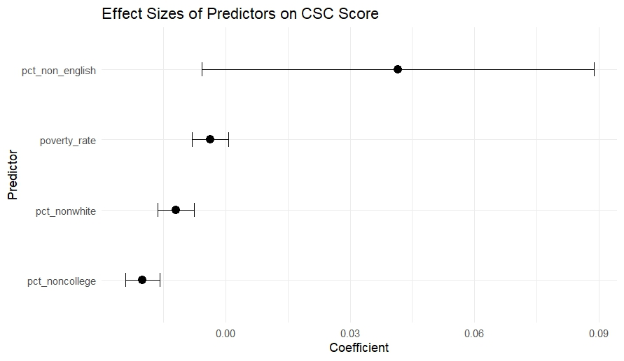
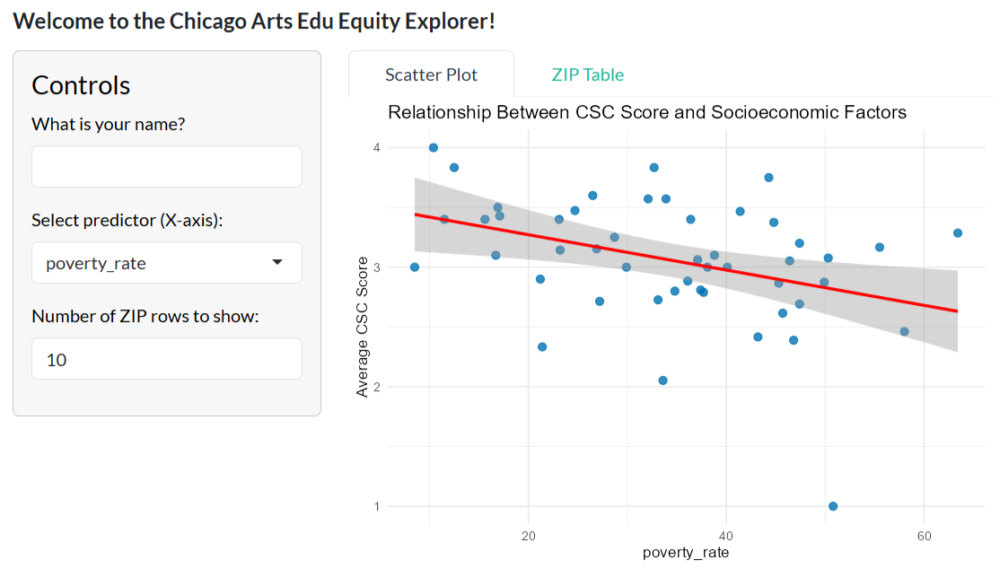
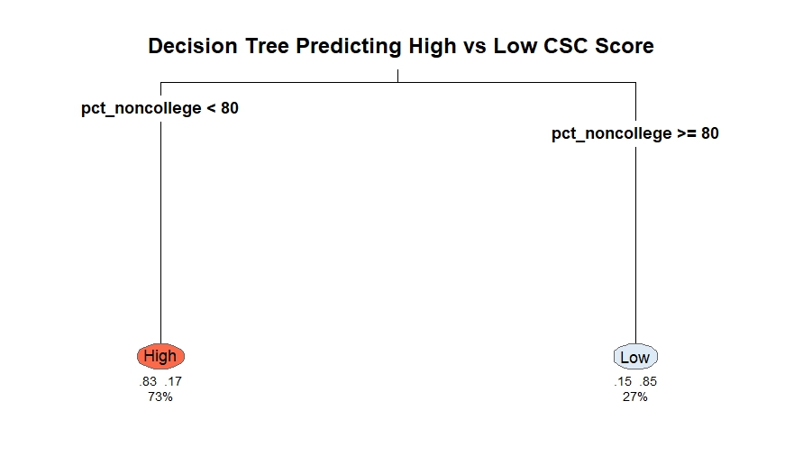

Arts Education Equity in Chicago
Arts Education Equity in Chicago: A Data Analysis of Arts Access in Public Schools
ZIP code-level analysis of Creative Schools Certification (CSC) scores across Chicago, combining ACS data, spatial mapping, regression, an interactive Shiny dashboard, and a decision tree classifier to examine how socioeconomic conditions shape arts education access.
Overview
Although CPS designates the arts as a "core subject," the quality and availability of arts instruction vary considerably across neighborhoods. Arts teacher vacancies are disproportionately concentrated in South and West Side neighborhoods, many schools do not meet the required 120 minutes of weekly arts instruction, and facility disparities remain persistent across the district.
Analytical Approach
This project merges ZIP code-level socioeconomic indicators from the American Community Survey (ACS) 2022 5-year estimates with Creative Schools Certification (CSC) data from Ingenuity's ArtLook Maps. The analysis proceeds in four steps:
01
Spatial mapping of CSC scores by ZIP code
02
OLS regression — 4 socioeconomic predictors
03
Interactive Shiny dashboard for stakeholder exploration
04
Decision tree classifier to identify combinational patterns
Visualizations

Figure 1. Average CSC Score by ZIP Code. Higher scores concentrated in the North Side; lower scores in South and West Sides.

Figure 2. Regression coefficient plot. Most predictors show weak associations with wide confidence intervals crossing zero.

Figure 3. Interactive Shiny dashboard allowing stakeholders to explore relationships between socioeconomic predictors and CSC scores.

Figure 4. Decision tree classifier. Educational attainment (pct_noncollege) emerged as the only meaningful split — ZIP codes with pct_noncollege < 80% classified as High CSC with 83% probability.
Key Findings
01
Clear North-South divide — higher CSC scores in North and central ZIP codes, lower scores in South and West Sides.
02
Poverty rate, racial composition, and linguistic diversity show weak, statistically insignificant associations with CSC scores (R² = 0.55).
03
Educational attainment was the only meaningful predictor in the decision tree — ZIP codes with pct_noncollege < 80% classified as High CSC with 83% probability.
04
Disparities are likely driven by structural factors — staffing, budgets, partnership networks — not ZIP-level demographics alone.
Policy Implications
Prioritize structural needs
Direct arts educators and resources to ZIP codes with staffing shortages and facility limitations, not based on demographic characteristics.
Expand community partnerships
Facilitate more arts partnerships for historically under-resourced schools to mitigate staffing and facility gaps.
Improve data transparency
Support schools with CSC reporting and integrate real-time indicators such as staffing stability and partner engagement.
Center equity in policy design
Lower CSC scores reflect structural conditions, not community deficiencies. Results should guide support, not punitive accountability measures.
Limitations
This analysis relies on ZIP code-level aggregates, which may mask within-ZIP variation. CSC data depends on school self-reporting, and schools with incomplete submissions — often those with fewer staff — may be underrepresented. ACS estimates are five-year averages that may not reflect recent neighborhood changes. Findings should be read as diagnostic signals, not causal claims.